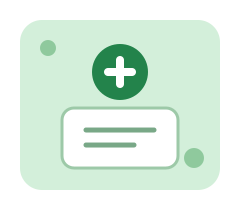

Registro
Formulario para ingresar los datos de la solicitud.
Sistema de Gestión de Solicitudes
Este sitio permite registrar una solicitud, consultar su radicado y revisar información básica del proceso.
Crear solicitud Consultar radicado
Formulario para ingresar los datos de la solicitud.
Consulta del estado usando el número de radicado.
Listado de solicitudes de ejemplo para revisión.
Completa los datos básicos para registrar el cambio de IPS.
Escribe el radicado que recibiste al registrar la solicitud.
Aquí aparecerá el resultado de la consulta.
Listado local de solicitudes de ejemplo registradas en esta página.
| Radicado | Afiliado | IPS de destino | Estado |
|---|---|---|---|
| SIG-IPS-001 | María López | Centro de Salud Central | RECIBIDA |
| SIG-IPS-002 | Pedro Ruiz | IPS San José | EN REVISIÓN |
Los datos que aparecen al iniciar son ejemplos para probar la interfaz.
Pasos básicos para usar el prototipo.
Si tienes dudas, revisa que el documento y el número de radicado estén escritos correctamente.